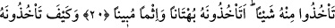
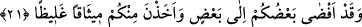
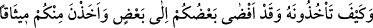
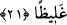

MEHİR
20- Eğer bir eşi bırakıp da yerine başka bir eş almak isterseniz, onlardan birine
yüklerle mehir vermiş olsanız dahi ondan hiçbir şeyi geri almayın. Siz iftirâ ederek
ve apaçık günah işleyerek onu geri alır mısınız?
21- Vaktiyle siz birbirinizle haşir-neşir olduğunuz ve onlar sizden sağlam bir
teminat almış olduğu halde onu nasıl geri alırsınız!
“Eğer” boşayacak kadar kendisinden soğuduğunuz “bir eşi bırakıp da yerine”
arzuladığınız “başka bir eş almak”, başka bir kadınla evlenmek “isterseniz onlardan
birine yüklerle” çok malı “mehir vermiş olsanız dahi ondan”, verdiğiniz bu maldan
“hiçbir şeyi”, çoğu bir tarafa azıcık bir kısmını bile “geri almayın. Siz iftirâ ederek”
bühtan ve büyük bir zulüm yaparak, apaçık günah işleyerek onu”, verdiğinizin bir
kısmını “geri alır mısınız?”
Câhiliyye devrinde bir kimse bir kadınla evlenip sonradan bir başkası hoşuna gider
ve onunla evlenmek isterse evli olduğu eşine zinâ iftirâsında bulunurdu ki, yenisini
nikahlamada kullanmak için ona verdiği mehri fidye olarak geri vermeye kendisini
mecbur bıraksın. İşte böyle yapmaları yasaklanmıştır.
“Bühtân”, sözlükte insanın büyüklük taslayarak arkadaşına yönelttiği yalandır.
Kelime aslında hayrete düşmek mânâsınadır. Çünkü, bühtân, hakkında yalan söylenen
şahsı hayret ve dehşete sürükleyen bir yalandır. Kelime, bâzen bâtıl davranışlar için de
kullanılır. Bu sebepledir ki burada zulüm olarak tefsîr edilmiştir.
21- Vaktiyle siz birbirinizle haşir-neşir olduğunuz ve onlar sizden sağlam bir
teminat almış olduğu halde onu nasıl geri alırsınız!
“Vaktiyle siz birbirinizle haşir-neşir olduğunuz”, hanımlarınızla aranızda bu mehri
almanıza ters düşecek halvet, mehrin tâyin edilmesi, size hizmet etme haklarının sâbit
olması ve diğer birtakım haller cereyân etmişken “ve onlar sizden sağlam söz almış